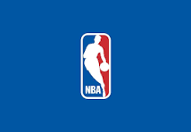
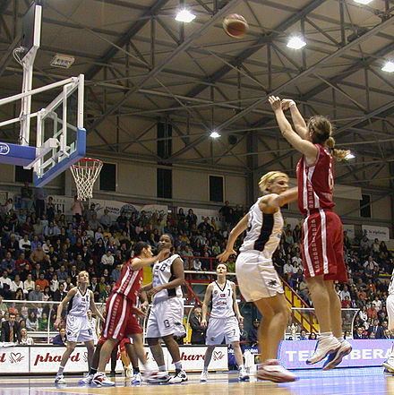

Histoire du basketball :
Le basket-ball ou basketball, fréquemment désigné par son abréviation basket, est un sport collectif de balle opposant deux équipes de cinq joueurs sur un terrain de forme rectangulaire. L'objectif de chaque équipe est de faire passer un ballon au sein d'un arceau de 45 cm de diamètre, fixé à un panneau et placé à 3,05 m du sol : le panier. Chaque panier inscrit rapporte deux points à son équipe, à l'exception des tirs effectués au-delà de la ligne des trois points (qui rapportent trois points) et des lancers francs accordés à la suite d'une faute (qui rapportent un point). L'équipe avec le nombre de points le plus important remporte la partie. Le basket-ball se pratique exclusivement à la main, et les joueurs peuvent se déplacer balle en main en dribblant sur le sol ou en effectuant deux pas maximum sans dribbler. L'équipe en possession du ballon (l’équipe qui attaque) tente d'inscrire des points en réalisant des tirs, des double-pas ou des dunks, tandis que l'équipe en défense essaie de les en empêcher en réalisant des interceptions de ballon ou des contres. Si le tir échoue, les joueurs des deux équipes tentent d'attraper la balle au rebond.
James Naismith, un professeur d'éducation sportive originaire du Canada, invente le basket-ball en 1891 dans l'État du Massachusetts (États-Unis) pour maintenir la condition physique de ses élèves durant l'hiver. Le sport devient rapidement populaire et se développe dans les universités et écoles secondaires en Amérique du Nord au début du siècle. La Fédération internationale de basket-ball (FIBA) est créée en 1932 et le sport est inscrit au programme des Jeux olympiques en 1936. La principale ligue professionnelle masculine des États-Unis, la National Basketball Association (NBA), est fondée en 1946 et voit émerger de grands joueurs qui contribuent à l'accroissement de la popularité du basket-ball : Wilt Chamberlain et Bill Russell dans les années 1960, puis Kareem Abdul-Jabbar, Moses Malone, Larry Bird, Magic Johnson, et surtout Michael Jordan, fréquemment considéré comme le plus grand basketteur de l'histoire5, puis Kobe Bryant et LeBron James.

